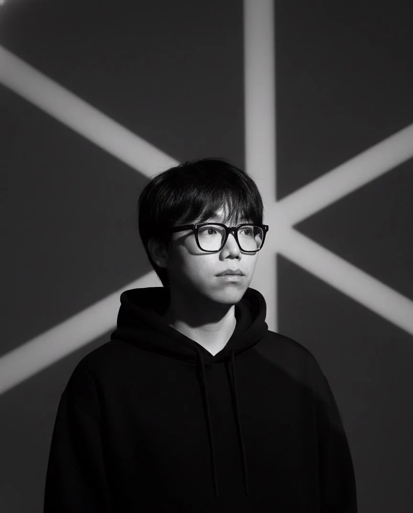
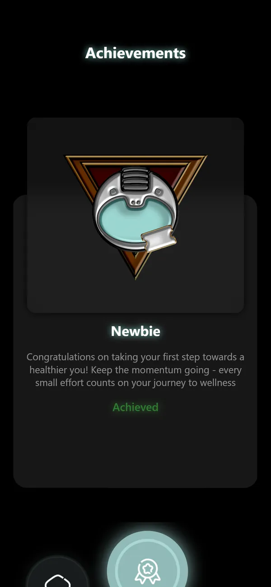

원칙을 화면의 규칙으로
옮기고, 사용자에게
다시 확인합니다
UX & UI 디자이너 김태현입니다.
리서치로 근거를 세우고, 직접 만들고, 테스트에서 어긋난 곳을 고쳐 왔습니다.

PROJECT 01Thryve
의지가 약한 사람도 계속 쓰는 헬스 앱
POSITION
현대오토에버 UX & UI Designer
생성형 AI 서비스 운영 UI 디자인 지원
프로젝트 세 개로 보여 드립니다
About
영국에서 학부와 석사를 마쳤습니다. 한국어가 모국어고 영어는 원어민 수준입니다.
학력
- University of EdinburghMSc Design and Digital Media · Merit
2024.09 – 2025.11 - University of YorkBSc Interactive Media · 2:1 Honours
2019.09 – 2022.07
도구
- 디자인Figma, Adobe XD, Balsamiq, Photoshop, After Effects, Blender
- 구현React Native, HTML/CSS/JavaScript
- 협업Mural, Miro, Notion
어학·자격
- TOEIC 990 · TOEIC Speaking AH(200)
- GTQ 그래픽기술자격 1급
수상
- MSc Design and Digital Media 학업우수상Merit · 2025
- 음주운전 근절 시각 창작물 공모전 우수상포스터 · 2023
Selected Projects
모두 리서치부터 화면까지 단독 진행한 프로젝트입니다.
아래 카드를 누르면 각 프로젝트 페이지로 이동합니다.